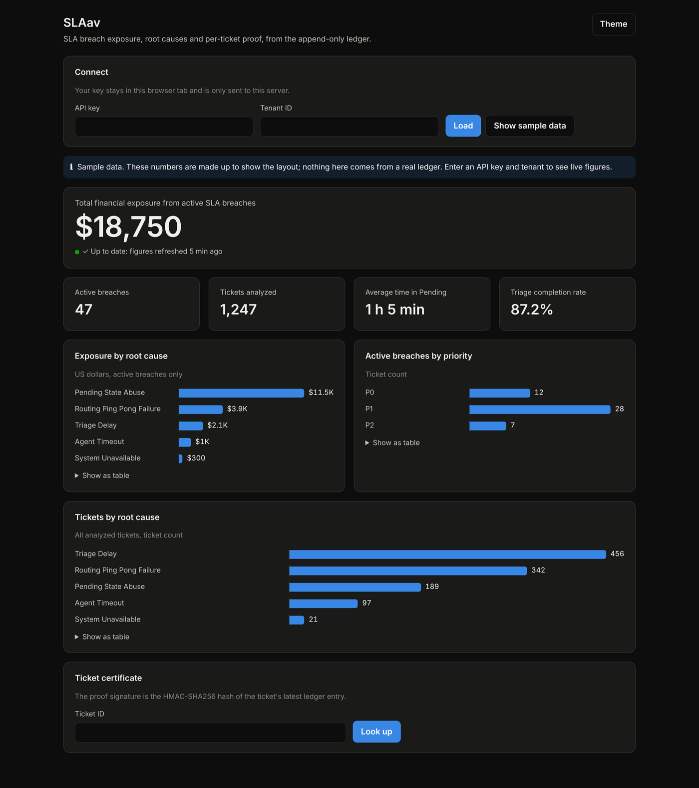

SLAav
An SLA authority layer for any support platform: Zendesk, Freshdesk, ServiceNow, Jira Service Management or Help Scout.
Status: MVP, deployed behind an API key, with its own database. It builds and its full test suite passes. A browser dashboard shows the finance and operations views and looks up per-ticket certificates; its “Show sample data” button works without a key. The source code is private; a walkthrough is available on request.
When a support SLA is breached, someone pays, and the ticketing platform's own logs can be edited after the fact. SLAav keeps an independent, tamper-evident record of every SLA event. It works out why each breach happened, proposes a fix, and gives finance and operations a dollar figure they can defend.
The dashboard

How it works
- 01Translateeach platform's statuses into one vocabulary
- 02Validatebad data goes to quarantine, never “fixed”
- 03Recordappend-only ledger, HMAC-SHA256 chain
- 04Diagnoseone of five root causes
- 05Intervenesigned corrective proposal + priority
- 06Reportdashboard, CFO / COO views, certificates
| Any ticketing platform | Zendesk, Freshdesk, ServiceNow, Jira Service Management and Help Scout, plus custom mappings. Unknown statuses are rejected, never guessed. |
|---|---|
| Append-only ledger | A Postgres ledger with an immutability trigger. Any attempt to edit or delete history is rejected by the database itself. |
| Keyed hash chain | Every entry is linked to the one before it with HMAC-SHA256. Forging an entry requires the signing key. |
| Root-cause routing | Pending State Abuse, Routing Ping-Pong, Triage Delay, Agent Timeout, or System Unavailable |
| Interventions | A corrective action and priority per root cause, recorded as a signed ledger entry. Proposals only; nothing is written back to the platform. |
| Data erasure | A single, audited way to blank a record's personal data, as GDPR-style requests require, while every other change stays blocked. |
| CFO view (API + dashboard) | Active breaches, total financial exposure, and breakdowns by severity and root cause |
| COO view (API + dashboard) | Operational attribution, time spent in pending, and triage completion |
| Certificates | Per-ticket cryptographic proof of the ledger's state, with a lookup in the dashboard |
How it's verified
- 347 tests run in CI on every push and pull request, against a live Postgres 18 database, not mocks.
- The hash chain is checked independently. A test recomputes each HMAC from scratch and requires an exact match with the stored hash.
- 14 adversarial ingestion tests. Malformed or hostile data goes to quarantine and is never quietly “fixed up.”
- Backups are proven, not assumed. An end-to-end test restores a real copy, damages it nine different ways, and requires the check to catch every one.
- Load tested against real production, three times, including once with the database pool shrunk on purpose to force the circuit breaker open and confirm it recovers.
Defects caught
These came from writing tests that ask harder questions than “does it run”. All are fixed, and each fix has a test that pins it.
Revoking one key could revoke the wrong one
The key ID was matched as a pattern, so a wildcard could hit an arbitrary key. Now it must match exactly.
Data erasure had never worked
The ledger's own append-only rule blocked the erasure path, so it could never succeed. Now exactly one change is allowed: blanking a record once.
The backup check missed 7 of 9 kinds of damage
A restored copy with edited history or a changed dollar amount could still pass. It now compares every table in full.
Tests weren't running on changes
CI only ran when started by hand. It now runs on every push and pull request.
Limits, stated openly
Not yet claimed: a backup restore drill against production, a production scheduler, an automated repeatable load-test suite, a key-rotation drill, a Bitcoin-confirmed timestamp anchor, a public third-party proof endpoint, or multi-instance high availability.
“Claims track commits and CI runs, not intent.”